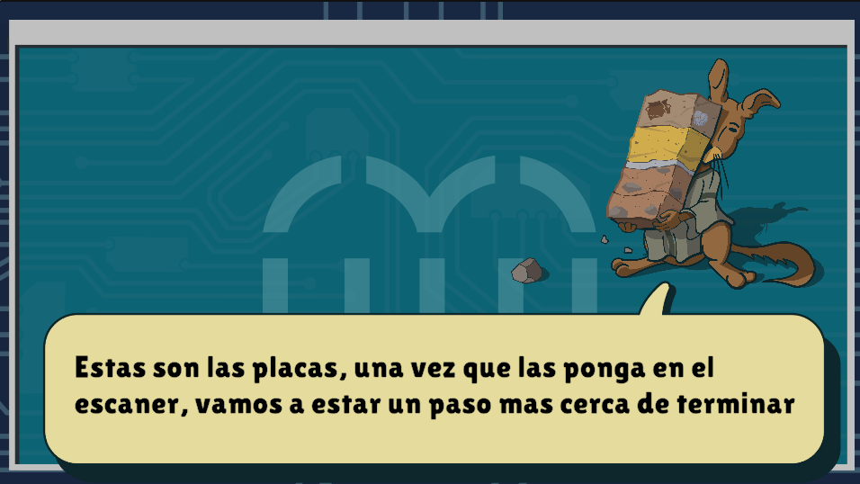
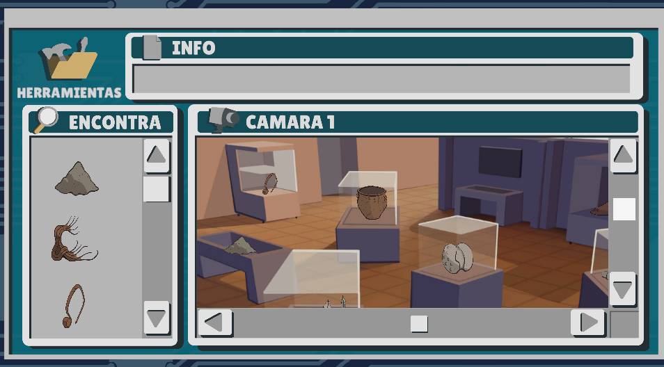

// game_developer.exe_
Agustín
Cavalié
Diseño y programo mecánicas de juego que se sienten bien de controlar — desde arcades 2D pixel art hasta juegos grandes de acción 3D.
01 — about

Hola, soy Agustín.
Game designer enfocado en el pulido, el game feel, y en que la jugabilidad no sea solo funcional sino satisfactoria de verdad.
Desarrollé tanto juegos 2D de estilo arcade como proyectos 3D completos, casi siempre en solitario, cubriendo diseño, programación y arte. Fuera de los juegos hice paginas web o proyectos educativos
Me inspiro en la exploración y narrativa de Tunic, Hollow Knight y Dark Souls, combinadas con el ritmo fluido de Devil May Cry, Downwell o Smash Bros.
- Ubicación
- Buenos Aires, Argentina
- Motores
- Unity · Unreal
- Herramientas
- Aseprite · Illustrator · Crocotile 3D · PicoCad
02 — professional work
De Wikimedia al Museo



Colección de minijuegos WebGL que se resuelven recorriendo el tour del Museo Gregorio Álvarez, en Neuquén — pensada para funcionar igual de bien en celular que en PC.
- Diseño de los minijuegos a partir del contenido curatorial del museo.
- Mecánicas de jugador: arrastrar, seleccionar, mover cámaras y botones táctiles.
- Detección y resolución de bugs, mejoras de performance y estabilidad.
- Configuración WebGL apuntada tanto a celulares como a PC.
03 — personal projects
Proyectos personales
Un poco de todo lo que estuve trabajando por mi cuenta.
04 — skills
Herramientas y conceptos
Motores & arte
Código
Programación de juegos
05 — resume
Experiencia & educación
Experiencia laboral
Game Developer · Wikimedia Argentina
Lead developer de la colección de juegos del Museo Gregorio Álvarez, Neuquén. Desarrollo, diseño y QA principal.
Support & Service Agent · Activo Contact Center
Atención al cliente en campañas de marketing con objetivos dinámicos.
Screenwriter · Guionarte School
Producción y guion para cortos y series de distribución internacional, incluyendo Simuladores de Damián Szifron.
Administrative Cadet · Baufeld Constructions SRL
Preparación y entrega de documentación administrativa.
Educación
Técnico en Desarrollo de Videojuegos · UADE
Completado.
Inglés certificado C2 · Education First
Completado.
Guion cinematográfico · FUC
Screenwriter · Guionarte School
Completado.